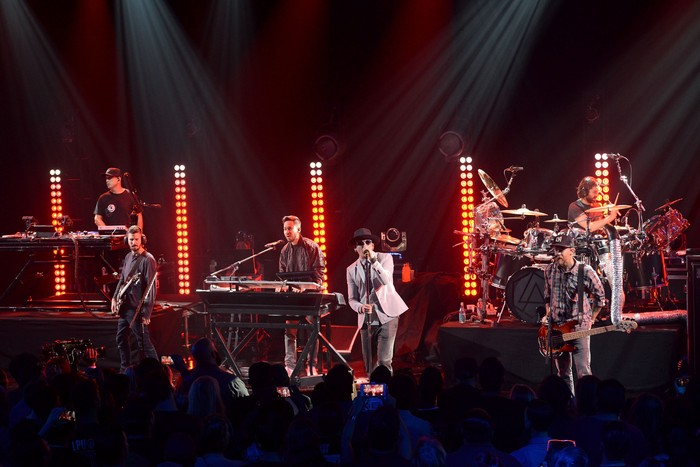

O One More Light é o sétimo álbum de estúdio do Linkin Park, lançado em 19 de maio de 2017, pela Warner
Bros. Records. Foi o último álbum que contou com a participação de Chester Bennington, que se suicidou no
mesmo ano, e Rob Bourdon, que decidiu não voltar à banda em 2024. O disco representa uma grande mudança no
estilo da banda, sendo 100% focado no pop, com forte presença de elementos eletrônicos, melodias suaves e
letras profundamente emocionais. É um álbum que aborda temas como luto, empatia, fragilidade e conexão
humana, refletindo momentos difíceis vividos pelos integrantes, especialmente Chester Bennington. Assim como
no seu antecessor, The Hunting Party, Brad Delson e Mike Shinoda foram os principais produtores do álbum.
Teve 3 singles: Heavy, Talking to Myself e One More Light. Estreou em 1° lugar na Billboard 200 e vendeu
mais de 800 mil cópias.
Linkin Park em 2017 durante o One More Light World Tour performando
Heavy em Birmingham, este foi o último show de Chester Bennington
Do diálogo à melodia
Assim como no álbum anterior, Brad Delson e Mike Shinoda foram os principais produtores do álbum. Foi o
primeiro álbum que contou com um processo de composição bem diferente: escrever sem nenhum som em mente e,
em vez disso, escrever com significado em mente. Em vez de escrever as faixas peça por peça, a banda não
saía de uma sessão sem ter uma música em mente. Tudo começava como uma conversa, e a partir delas as músicas
eram construídas progressivamente de uma progressão de acordes para letras. Mike disse: "A única coisa com a
qual estou super animado é que eu realmente quero fazer as músicas mais arriscadas agora, porque sinto que
estamos no ponto em que é tipo, "ok, nós lidamos com tantas coisas" e arriscado pode ser um monte de tipos
diferentes de risco. Arriscado pode significar a coisa mais estranha, a mais esquisita, as progressões de
acordes mais esquisitas ou algo assim, ou pode ser a coisa mais pop que vem à mente. Que nós simplesmente
fizemos isso funcionar, soa como nós, não soa estranho, soa muito legal, e eu quero fazer algumas músicas em
que você diga "puta merda". É aí que temos que encontrar isso."
O álbum trouxe uma sonoridade pop eletrônica, com batidas suaves, sintetizadores e melodias emotivas,
marcando uma ruptura proposital com o estilo mais pesado do disco anterior, The Hunting Party. As letras do
One More Light abordam luto, empatia, conexão humana, fragilidade emocional e superação, refletindo
experiências pessoais dos integrantes da banda, não apenas Chester e Mike. Bennington acrescentou: "Há
músicas que não falam especificamente sobre situações - elas falam sobre um quadro de pensamento. Isso é uma
merda que se passa na minha cabeça, ou isso é algo com que estou lidando. Para mim, conta uma história, mas
também é revelador de uma maneira diferente - e isso parece honesto para mim."
Linkin Park em 2017 durante o One More Light World Tour, Milão
O toque pessoal na arte
Como de costume, Mike Shinoda e Joe Hahn tiveram grande infuência na direção artística do disco. Além disso,
após 2 álbuns longe da banda, Frank Maddocks voltou para trabalhar na arte do One More Light.
A capa do álbum é uma foto tirada por Frank, onde seu filho e alguns amigos brincam na praia. Mike disse:
"Frank nos mostrou esta foto meses atrás, e ela parece continuamente levantar sua mão como uma foto
importante em relação ao tom do álbum. Continuamos voltando a ela, o que deixou claro para nós que seria a
que acabaria na capa. Somos todos caras de família. A imagem me lembra de como é quando todas as nossas
famílias se encontram e nossos filhos estão juntos. Por essa razão, há uma conexão muito pessoal entre esta
arte e o lugar de onde a música veio. Ela me lembra de casa."
Sobre o título do álbum, em uma entrevista à LP Association, Mike explicou que, diferentemente dos discos
anteriores, todas as faixas começaram com o título, porque as músicas surgiam a partir das letras. Ou seja,
"One More Light" já era o nome desde o princípio, pois as palavras vieram antes da música.
Linkin Park em 2017 durante o One More Light World Tour, Berlim
Rejeição de uma nova identidade
O One More Light foi o álbum mais diferente da carreira do Linkin Park, marcando uma ruptura completa com os
estilos anteriores da banda, mas acabou recebendo críticas negativas pelos fãs e especialistas. A NME
criticou o álbum, dando uma nota de 2/10, afirmando que era "duro criticar uma banda boa que está tentando
algo diferente e não é uma questão de que isto é um álbum pop. A questão é que é fraco e é planejado para
ser comercial - talvez para competir com bandas, como Twenty One Pilots". Neil Z. Yeung da AllMusic
concordou, afirmando que "a questão não é o esforço pop; na verdade, eles ganham pontos pela bravura de
tentar fazer algo fora da zona de conforto deles. O problema é que a maior parte de One More Light é privado
de uma carga visceral que definiu muito dos trabalhos anteriores da banda [...] não há gritos ferozes por
Chester Bennington, quase não há muitos riffs e o DJ Hahn desapareceu." A Consequence of Sound criticou o
som do disco afirmando que "eles perseguiam uma tendência pop-EDM como uma tentativa de capitalizar na sua
ubiquidade" e soa como se as canções "fossem selecionadas por um comitê", fazendo com que o álbum se torne
mais uma "confusão confusa de um álbum de uma banda que abandonou seu senso de identidade".
O disco estreou no 1° lugar da Billboard 200 e vendeu mais de 110 mil cópias em sua primeira semana nos
Estados Unidos. No total vendeu mais de 800 mil cópias no mundo inteiro. Apesar da recepção negativa, o
álbum foi um sucesso comercial.

Linkin Park em 2017 no iHeartRadio Album Release Party, Burbank
Uma despedida emocionante nos palcos
Para o One More Light, álbum mais diferente do Linkin Park, muito focado no pop, se destacaram as seguintes
turnês:
- One More Light World Tour, turnê mundial principal de divulgação do álbum, teve início em maio de 2017,
com shows na América do Sul, Europa e Ásia. Com destaque para os shows intimistas e o foco na conexão
emocional com o público. A banda apresentou faixas do novo álbum, além dos hits de álbuns antigos. Os shows
contaram com menos elementos visuais grandiosos em relação a turnês anteriores, priorizando a performance e
a mensagem das músicas. A etapa norte-americana da turnê, que começaria em julho, foi cancelada após o
falecimento de Chester Bennington no dia 20 de julho de 2017.
Linkin Park no ECHO 2017, Berlim
A tragédia que marcou o fim de uma era
No dia 20 de Julho de 2017, o mundo foi surpreendido com a notícia da morte do vocalista do Linkin Park
Chester Bennington, aos 41 anos. A causa da morte foi suicídio por enforcamento. O falecimento ocorreu no
aniversário de 53 anos de Chris Cornell, vocalista do Soundgarden e Audioslave, além de amigo muito próximo
de Chester. Ele chegou a cantar no funeral de Chris, apresentando uma versão comovente de “Hallelujah”, e
escreveu uma carta aberta em homenagem ao amigo. Isso gerou intensa comoção entre fãs e levou muitos a
especular sobre o impacto emocional da perda de Cornell na vida de Chester.
No dia de sua morte, o Linkin Park havia lançado oficialmente o clipe da música Talking to Myself, poucas
horas antes da notícia se espalhar. A banda estava se preparando para iniciar a etapa norte-americana da
turnê do álbum One More Light, que acabou sendo imediatamente cancelada. A morte de Chester chocou o mundo
da música, fãs, colegas e críticos, não apenas pelo impacto artístico de sua carreira, mas também pela
maneira como ele sempre se mostrou vulnerável e transparente sobre suas lutas pessoais. Ao longo dos anos,
Chester falou abertamente sobre seus traumas de infância, incluindo abuso sexual, problemas com drogas,
depressão e crises de autoestima, elementos que ele frequentemente canalizava em suas letras intensas e
emocionais. Milhares de fãs ao redor do mundo prestaram homenagens em vigílias e tributos.
Em outubro de 2017, o Linkin
Park organizou o concerto “Linkin Park and Friends: Celebrate Life in Honor of Chester Bennington” no
Hollywood Bowl, reunindo artistas e amigos para celebrar sua vida e legado, como o Blink-182, Jonathan Davis
do Korn, M. Shadows e Synyster Gates do Avenged Sevenfold, Oli Skyes do Bring Me the Horizon, Daron Malakian
e Shavo Odadjian do System of a Down, DJ Steven Aoki, entre outros.
Chester Bennington deixou seis filhos e uma carreira marcada por autenticidade, intensidade vocal e uma
contribuição profunda para a música moderna. Sua voz, sua dor e sua força continuam ecoando através das
músicas que ajudou a criar — canções que, para muitos, deram voz a sentimentos que antes não sabiam nomear.
Linkin Park em 2017 performando One More Light durante o evento em
homenagem à Chester "Linkin Park and Friends – Celebrate Life in Honor of Chester Bennington", Los Angeles